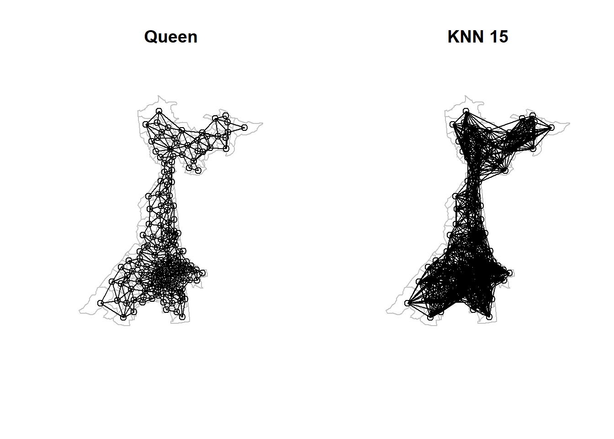

Week 12 Spatial Regression III
12.1 Getting Ready, w12
12.1.1 Learning objectives, w12
| After this module you should be able to… |
|---|
12.1.2 Important Vocabulary, w12
| Term | Definition |
|---|---|
| Data generating process | The true underlying causal structure that gives rise to (generates) the data from which you sampled. The data generating process is not typically known. We use models to try to emulate or approximate the data generating process. |
| Spatial Durbin model | Spatial econometric model in which sptaially lagged summary of neighbors values of the *covariates* and of the *outcome*. Spatially lagged covariates suggest exposure in neighboring places affects outcome in index location. |
| Spatial Econometrics | A sub-field of statistics bridging econometrics and spatial analysis, wherein theoretical properties, dependencies, and interactions of spatially referenced data are analyzed in a regression framework. |
| Spatial error model | Spatial econometric model in which unmeasured or unobserved spatially clustered predictors of the outcome produce residual autocorrelation in regression model residuals that is not accounted for by the main effects of measured covariates |
| Spatial lag model | Spatial econometric model in which a spatially lagged sumary of neighbors values of the dependent (outcome) variable is included on the right-hand side of the model. This pattern theoretically suggests a diffusion or contagion process of the *outcome* |
| Spatially lagged variable | The weighted sum or weighted average of the neighboring values for that variable. The variable could be a spatially lagged outcome or spatially lagged covariate/predictor |
12.2 Spatial econometric models: Putting dependence right in the model
In Spatial Regression 1, we examined the spatial dependence left-over after (e.g. residual to) conventional aspatial linear regression. The benefits of multivariable regression for answering epidemiologic questions are the ability to summarize relationships conditional on possibly highly-dimensional covariate patterns. The use of Moran’s I statistics to test for presence of spatial auto correlation in the residuals (errors) of multiply-adjusted models is a strategy for a) diagnosing violations of model assumptions; and b) iteratively improving model specification (variables selection) in an effort to explain measured variables as drivers of clustered outcomes.
However, the mix of aspatial regression with spatial residual diagnostics limits explanatory power for epidemiologically interesting spatial phenomenon. Specifically, the aspatial regression strategy:
- Assumes that the full effects of exposures on outcomes are contained within the boundaries of the unit of aggregation (e.g. neither ‘spills over’ or ‘spreads to’ neighboring regions affecting their rates)
- Will still produce biased estimates of coefficients if residual autocorrelation of the errrors remains. In other words, if you add in all of the predictor variables you have, and the Moran’s I statistic remains meaningfully high, the regression coefficients are likely to be biased.
In this module, we extend these aspatial methods by inserting representations of the data generating process that produces or explains auto correlation directly into the regression model. The data generating process is the set of interactions, relationships, and effects among people and their environments that give rise to the actual observed data. Therefore, by articulating a specific and testable data generating process, we are trying to explicitly model the spatial processes at play in order to recover unbiased (or less biased) covariate association estimates, but also to statistically test and quantify for evidence of spatial spillover. Spatial spillover refers to the phenomenon where the experiences in neighboring units (e.g. their outcome rates or their exposure/covariate values) have a direct or indirect influence on the risks or rates in an index region. Spillover therefore approximates the processes of contagion, diffusion, and propagation that could occur with infectious diseases, environmental contaminants, and some social processes including norms, knowledge, attitudes, and behaviors.
The potential evident in this class of spatial models – often termed spatial econometrics models because of their development in economics – comes at the cost of many assumptions, and increased importance of thoughtfulness on the part of the epidemiologic analyst. There are both thorny statistical issues involved, but also the perennial challenge of overlaying statistical issues on the questions and interests of population sciences like epidemiology.
12.2.1 Comparing spatial econometric models
There are numerous regression models to quantify spatially correlated data. In this module we introduce just three that have seen more use in economics, sociology, and political science, but that are occasionally used in epidemiology. Unfortunately, these methods are primarily developed for linear regression where the outcomes (or really the errors conditional on all other aspects of the model) are assumed to be normally and independently distributed. We can use these models for spatial analysis of epidemiologic data if the ‘events’ being analyzed are rates, risks, or prevalence that are plausibly normally distributed (note we can still use population weighting of regions to account for heteroskedasticity in variance due to varying population size). For those interested, there are some Bayesian and other extensions to incorporate spatially-lagged predictors into generalized linear regression.
12.2.1.1 Spatially Lagged Outcome Model
The first econometric model to be introduced is sometimes called a ‘spatial lag model’ because it includes the spatially lagged value of the neighbors outcome (e.g. weighted average of the values of the outcome for all spatial neighbors) as a preictor in the model. In other words it suggests that the disease risk, rate, or prevalence in the neighboring regions has a direct influence on the risk, rate, or prevalence inside the index region. The easiest metaphor for this would be contagious infectious disease, where the number of infected neighbors could directly cause your own infection incidence to rise due to contagion. While we have previously talked about social contagion for understanding the spatial spread of disease, that seems more plausible in the next model, where the exposures or predictors are lagged.
The Spatial Lag Model can be represented like this:
\[Y_i=\rho WY_{-i} + \beta X_i + e_i\] To describe that model in words we have:
- The health event outcome, \(Y_i\) which is the value of a risk, rate, prevalence in the \(i^{th}\) region
- The spatial correlation coefficient, \(\rho\) quantifying the strength or magnitude of correlation between the average outcome in the neighbors with the outcome in the index county, \(i\), conditional on all other variables in the model. The spatial correlation coefficient, \(\rho\) is interpreted as other correlation coefficients with a range from \(-1\) to \(+1\). Note that the value \(\rho=0\) implies zero correlation (net of other covariates in the model) of the neighbors outcome with the index region outcome; in this setting the term effectively drops from the model because it is zero, resulting in a conventional aspatial linear regression model.
- The spatial weights matrix, \(W\), is the same spatial weights construct used in spatial Empirical Bayes and Moran’s I analyses. In other words it is the mathematical summarization of which regions are neighbors with which. Note that we use row-standardized weights to aid in interpretting the spatial regression coefficient.
- The \(\rho W\) is specific to the values of the outcomes \(Y_{-i}\). In other words this is about the regions that are not \(i\), and specifically those who are neighbors, as defined by \(W\) (e.g. all non-neighbors have \(W=0\) and thus drop out).
- The \(\beta X_i\) and \(e_i\) have the same interpretation as they do in conventional regression. Specifically, \(\beta\) is the regression coefficient for the change in the outcome \(Y\) for each 1-unit change in \(X\), conditional on the spatially lagged outcome, \(\rho WY_{-i}\)
12.2.1.2 Spatial Durbin Model
A natural extension to the Spatial Lag is a model where not only the outcome or dependent variable are allowed to spillover from one region to another, but the effects of the exposure or other independent covariates are similarly allowed to spillover. Conceptually, this model proxies a data generating process wherein the exposures effect on health is not constrained to fall only within the boundaries of a region and that region’s own outcome, but could also diffuse or spread to influence the outcome in neighboring regions. This is relatively easy to imagine with environmental and service-access predictors whose influence are unlikely to arbitrarily end at boundaries.
The statistical description of the Spatial Durbin model looks much like the Spatial Lag, with one addition:
\[Y_i=\rho WY_{-i} + \beta X_i + \gamma WX_{-i} + e_i\]
In this model the added components can be described in words like this:
- The spatial weights matrix, \(W\) is identical in both locations: \(\rho WY_{-i}\) and \(\gamma WX_{-i}\). In both instances it simply describes which regions are neighbors (\(W>0\)) and which are not neighbors (\(W==0\)).
- There are two sets of covariates, \(X\) in this model. The first reference (\(\beta X_i\)) refers to the measured covariates, \(X\) in the \(i^{th}\) region. In contrast the second reference \(\gamma WX_{-i}\), refers to the values of \(X\) that are not in the \(i^{th}\) region, indicated by the \(X_{-i}\) or ‘all regions that are not \(i\)’. More specifically this is the lagged (averaged) values of the neighbors for all regions not-i but also where \(W>0\) (e.g. among neighbors).
- \(\gamma\) is the coefficient quantifying the magnitude and direction of the association between the spatially-lagged covariates and the outcome.
12.2.1.3 Spatial Error Model
This final model is an alternative specification of the underlying reason for the observed data patterns, the data generating process. In this model, the assumption is that the reason for the observed spatial patterns of autocorrelation in outcomes and/or residuals is not one of spillover (contagion) of outcomes from one reason to the next, nor the spillover or diffusion of the effects of exposures from one region on the outcomes of neighbors.
Instead, this model simply states that the reason is because of important missing variables that themselves are spatially clustered. Therefore – until they can be included in the model – the model residuals will also be clustered or auto correlated. In other words this model assertion was the starting point in Spatial Regression I. However, what is different here is that the Spatial Error model articulates a statistical way to estimate valid and unbiased coefficients in spite of (or conditional on) the dependent errors or residuals.
This is done in a manner familiar to those who have worked with correlated data. The strategy is to explicitly model or account for the auto correlation as a nuisance term in order that the other terms in the model can be estimated in an unbiased way. The model form looks like this:
\[Y_i=\beta X_i+ u_i\] \[u_i=\lambda Wu_{-i} + e_i\]
Essentially what this model does is give a place for the correlation to be modeled (e.g. the residual correlation coefficient, \(\lambda\)), in order that the remaining residual, \(e_i\) can be assumed to be distributed \(N(0, \sigma^2)\)). The quantification of the correlation coefficient \(\lambda\) provides a similar interpretation as the spatial lag correlation coefficient, \(\rho\), in that each range from \(-1\) to \(+1\), with zero suggesting no correlation (e.g. all units are spatially independent, conditional on variables in the model).
12.2.2 Comparing and selecting spatial econometric models
Given this set of models, how is the spatial epidemiologist to choose? The best strategy is a mix of substantive knowledge and theory that is specific to the scenario or question at hand, with careful and cautious use of statistical testing to compare the model fit of competing models.
First, there are several assertions made by LeSage & Pace (2009) that consider the consequences of a mis-match between whatever the true data generating process might be (e.g. what is really happening in the world that gave rise to the data), versus the data generating process approximated by the choice of one of these models.
- If the true data generating process is Spatial Error, any of the three models will produce unbiased estimates of coefficients, although the Durbin and Spatial Lag models may be less statistically efficient at doing so (e.g. produce unnecessarily large standard errors). So the answer will, on average, be valid regardless of model choice, but only if the true reason for the spatial clustering of residuals is because of missing variables.
- If the true data generating process is Spatial Lag, but the analyst selects a Spatial Error model, the model coefficients could be biased and misleading. In other words if there is a ‘contagious’ spread of the outcome producing the dependence in the risk or rate of disease, but instead of appropriately fitting a spatial Lag model, a spatial error model is fit instead, the answers may be invalid.
- Finally, if the true data generating process concerns direct spatial spread of the outcome and spatial spillover of the exposures or predictors (e.g. as suggested in the Durbin model), either the spatial Error or the Spatial Lag model will be biased. In other words, failing to explicitly model the spatial spillover of covariates can produce biased estimates.
The take home message from these assertions is that the Spatial Durbin model is a logical baseline or starting point in the absence of any specific substantive or theoretical reason to prefer the other models. By comparing the spatial Durbin model to the others, it is possible to test whether in fact there is any statistical evidence for the spatial spillover of covariates.
The use of statistical testing to compare models will be reviewed in the next tutorial section. However, briefly, it is possible to use likelihood ratio testing or comparison of AIC of competing model forms to determine whether the model fit is explained better with one strategy or another.
12.3 Estimating spatial econometrics models
12.3.1 Package & Data
The packages are largely the usual suspects with one addition, the package spatialreg. This package actually subsumed many functions from spdep. We will still use spdep for neighbor & weights creation, but I will not load the package directly because it has many function conflicts with spatialreg. We will use the spdep:: notation to call it out when needed.
Once again, we will use the Atlanta-area BRFSS 500-cities project census-tract-based estimates of self-reported health behaviors and outcomes, merged with some area-based indicators.
# Read in the dataset and remove tracts with missing values...
atl <- st_read('BRFSS_Atl.gpkg') %>%
na.omit() The full data dictionary is in the Spatial Regression II section of th eBook. Briefly, here are the variables we will focus on for this tutorial example:
| Variable | Description | Source |
|---|---|---|
FIPS |
Census tract ID | |
PopulationCount |
Count of tract pop | 500-cities, BRFSS |
MENTALHLTH |
Prevalence poor mental health > 14 days (18+)m | 500-cities, BRFSS |
PHYSHLTH |
Prevalence poor physical health > 14 days (18+) | 500-cities, BRFSS |
ParkProximity_std |
Distance to nearest park (z-score) | Opportunity Index |
Poverty_std |
Poverty rate (z-score) | Opportunity Index |
InstabilityStress |
Summed z-score from Foreclosure & Vacancy | Derived from Opportunity Index |
geom |
Census tract polygon geom | US Census bureau |
12.3.2 Defining the study question
What follows is an abbreviated summary of specific questions (statistical and epidemiologic), and their motivation. A more real-world scenario might include additional measures, consideration of other sources of bias include misclassification of exposure or outcome, selection bias, and ecologic bias or confounding related to the modifiable areal-unit problem.
12.3.2.1 The idealized ovarching question
The idealized overarching question is whether living in place characterized by concentrated poverty and housing instability causes (e.g. increases or decreases) poor mental health. We specifically focus on these variables for their hypothesized contribution to mental health:
Poverty_stdis the standardized poverty rate within each tract. We know that spatial concentration of poverty is associated with numerous contextual processes including services, stigma, and the built environment including walkability, food, and social environment. We therefore might hypothesize that higher poverty is associated with higher prevalence of poor health. Because of the spatial patterning of poverty and its relation to investment in built environment and services, we might also hypothesize this variable could also have a spatial spillover effect on mental health prevalence.InstabilityStresscaptures the degree to which housing instability (e.g. vacancy and foreclosures) occur in a neighborhood. Increased housing instability could be directly stressful for individuals, but could also produce indirect anxiety and depression in residents in the area.ParkProximity_Stdrepresents relative access to green space and parks. Evidence is mixed as to whether proximity to green space is causally related to mental health, but we might hypothesize that if a relationship exists, it is protective. We also might hypothesize that this is a predictor that could have ‘spatial spillover’PHYSHLTHcaptures the prevalence of poor physical health and is plausibly a direct cause of poor mental health. We might include this as a possible confounder of the effect.
This question is of public health relevance to the extent that spatial concentration of poverty, housing policy, and urban design decisions are reproduced through transportation, zoning, development, and housing policies (which themselves are theoretically quite modifiable), and the identification of place-based determinants of health can imply place-based targeted intervention including mental health screening and mental health services.
12.3.2.2 The (more) realistically answered overarching question
Generally, we cannot answer such an idealized overarching question with a single study design or modality. Given the use of the BRFSS 500-cities project, our more realistic overarching question might be whether the ecologic census-tract prevalence of self-reported poor mental health is associated with poverty rates in a sub-region of the Atlanta metropolitan region, conditional on ecologically-measured confounders. This more realistic question differs from the idealized version in its de-emphasis on recovering causal effect estimates, acknowledgment of ecologic (and in this case cross-sectional) measurement of exposure, outcome, and covariates, and restriction to a possibly unique sub-section of the metropolitan region.
12.3.2.3 Specific questions
Within this framework, we can generate several specific questions for which we anticipate specific answers. This distinction between the overarching question (which may have discrete quantitative answers, or often has qualitative answers), and specific questions is important. The former clearly frames and motivates the latter, but without the latter (specific questions) you may get lost in the sea of statistical results without clarity on what you can and want to know.
Below are just some possible questions that we can answer with these data. I divide them (perhaps too simplistically) into statistical and epidemiologic questions simply to highlight the different emphasis of each field. In reality there is clearly overlap in statistical and epidemiologic questions!
12.3.2.4 Statistical questions
- Which data generating process (spatial error, lagged outcome, or lagged outcome and covariates) best fits the data?
- Is there residual auto correlation above and beyond that explained by spatial auto regression terms?
- Which spatial weights matrix best fits the data?
12.3.2.5 Epidemiologic questions
- Is tract-level poverty or housing instability associated with poor mental health, adjusting for candidate causal confounders detailed above?
- Is there evidence of confounding of the target relationships by the candidate confounders using a change-in-estimates approach?
- Assuming census tracts are a reasonable definition of local neighborhoods, is spatial clustering of poor mental health primarily a function of missing variables or of spatial contagion or spillover processes?
- Does the association (if any) of poverty or housing instability with poor mental health primarily defined by local effects (e.g. within-neighborhood) or does poverty or housing instability in one place affect mental health in neighboring places?
- If there are spillover effects of contextual covariates, how important are the direct as compared with indirect effects?
- Do the spatial relationships between contextual covariates and poor mental health depend on (vary by) the definition of local and the inter-connectedness of places?
12.3.3 Defining competing definitions of local
We have emphasized at several points throughout the semester that one fundamentally important decision in spatial analysis is the specification of the spatial weights matrix which is the mathematical encoding of our belief about spatial relationships between study units of observation. The spatial neighbors are those geographic units believed to share experience or interact with one another, and are differentiated from units unlikely to do so. Whether regional units (or really the inhabitants of those regions) interact depends on the question at hand. For instance the experience of sharing access to a primary health care center likely occurs at relatively small scale (small set of neighborhoods primarily depend on that clinic). In contrast, when looking at access to liver transplantation services, the scope of local is quite different, with a much geographically more far-flung range of places willing to access that health resource.
In our question, the notion of the spatial concentration of poverty and housing instability is core. We could estimate these variables at the scale of a household, or the building, or the census tract, or conglomerations of census tracts, and so forth. Poverty concentrated at larger areas likely looks different in terms of the social and environmental context than micro-pockets of poverty, and therefore may have different impacts on mental health. So what is a reasonable definition of how much census tracts share or interact or spread the experience of poverty and mental health?
12.3.4 Two extremes
The Queen contiguity definition of neighbors probably represents the lower bound of connectedness possible with a given set of geographic boundaries (e.g. we can’t estimate apartment building values because we only have census tracts). But might interactions occur beyond the bounds of the contiguous census tracts? Perhaps. Might interactions be as likely to occur 10 miles away as 1 mile away? Unlikely (but not impossible). K-nearest neighbors is a definition that lets us flexibly scale up the size of the spatial connection network.
As a quick review, let’s create several competing spatial weights matrices under competing definitions of spatial neighbors. As mentioned above, the package we will use for spatial regression (spatialreg) has several conflicts with the package containing functions for creating neighbors (spdep). For that reason we did not load the package spdep above, but instead call it explicitly here using the double-colon notation below.
Queen contiguity weights:
# Create a Queen Contiguity weights objects
queen <- atl %>% # start with sf object
spdep::poly2nb() %>% # convert polygons to neighbor object
spdep::nb2listw() # convert nb object to spatial weights
# NOTE: nb2listw() creates row-standardized weighted by default
# That is what we want for spatial regressionAs a somewhat extreme alternative, here I create a k-nearest neighbor spatial weights assuming that interaction occurs between each tract and their 25 nearest neighbors!
# Create a 15 tract k-nearest neighbor weights object
knn15 <- atl %>% # start with sf object
st_centroid() %>% # get the centroid of each tract
st_coordinates() %>% # create matrix of x,y coordinates for that centroid
spdep::knearneigh(k=15) %>% # use spdep to find 15 nearest neighbors
spdep::knn2nb() %>% # convert that into a formal nb object
spdep::nb2listw() # and finally convert the nb into a spatial weights objectNow, let’s plot the two versions to visualize the range of connectivity being hypothesized:
# Create centroids object
atl.cent <- st_centroid(st_geometry(atl))
par(mfrow = c(1,2))
plot(st_geometry(atl), main = 'Queen', border = 'grey')
plot(queen, coords = atl.cent, add = T)
plot(st_geometry(atl), main = 'KNN 15', border = 'grey')
plot(knn15, coords = atl.cent, add = T)
Clearly the k-nearest neighbors provides a denser connectivity matrix with more neighbors than does the Queen contiguity.
12.3.5 Fitting multivariable regression models
12.3.5.1 Spatial or aspatial?
Because this is a different model from previous weeks, we should not assume that the aspatial model is necessarily a poor choice. Fitting and summarizing the results – including assessment of spatial auto correlation of residuals– should always be a starting point before moving on to spatial econometric regression.
m1 <- lm(MENTALHLTH ~ Poverty_std + InstabilityStress + ParkProximity_std + PHYSHLTH,
data = atl)
summary(m1)##
## Call:
## lm(formula = MENTALHLTH ~ Poverty_std + InstabilityStress + ParkProximity_std +
## PHYSHLTH, data = atl)
##
## Residuals:
## Min 1Q Median 3Q Max
## -2.7934 -0.7675 -0.1878 0.6420 3.9312
##
## Coefficients:
## Estimate Std. Error t value Pr(>|t|)
## (Intercept) 5.57191 0.33031 16.869 <2e-16 ***
## Poverty_std 1.12808 0.10492 10.752 <2e-16 ***
## InstabilityStress -0.05725 0.05310 -1.078 0.2824
## ParkProximity_std 0.53791 0.25446 2.114 0.0359 *
## PHYSHLTH 0.46897 0.02883 16.269 <2e-16 ***
## ---
## Signif. codes: 0 '***' 0.001 '**' 0.01 '*' 0.05 '.' 0.1 ' ' 1
##
## Residual standard error: 1.198 on 180 degrees of freedom
## Multiple R-squared: 0.9004, Adjusted R-squared: 0.8982
## F-statistic: 406.8 on 4 and 180 DF, p-value: < 2.2e-16Review the results above and take note of the magnitude and direction of associations. Remember our primary question focuses on poverty and housing instability. Also note the model fit as indicated by the \(R^2=0.9\). That is extremely high and may suggest over fitting. This could be related to the way in which the BRFSS 500-cities small area data are created: it is a small area modeling process in its own right, and the included variables may overly explain one another when jointly considered. We will ignore that fact for the purposes of this exercise, but I point it out to suggest some caution with such optimistic looking fit statistics!
To diagnose spatial auto correlation in the model residuals we repeat procedures from two weeks ago. I try the procedure for both the Queen contiguity weights and the 25-nearest neighbors. You can extend this to other intermediate specifications.
It appears that the model parameters do a reasonably good job of removing the spatial auto correlation, but there is still a significant positive Moran’s I under each spatial weights definition, warranting transition to spatial regression.
12.3.6 Spatial Error Model
The Spatial Error Model (SEM) posits that the measured covariates relate to (act on) the outcome within each region independently (e.g. they don’t spillover or act across boundaries). However, the model allows that something unmeasured (and within the county) predicts the outcome and is itself spatially patterned (not spatially random). The result is that the spatial auto correlation is a nuisance dependency arising from that missing covariate. By modeling the error (e.g. by specifying and/or estimating the form of the dependency as part of the model fitting process), we can achieve two objectives: i) quantify estimates of the residual dependency in the form of the correlation coefficient \(\lambda\) (lambda); and ii) estimate regression coefficients for the measured covariates that are no longer biased by the spatial dependence.
Remember, the assumed data generating process under the Spatial Error Model is as follows:
\[Y_i=\beta X_i+u_i\]
\[u_i=\lambda Wu_{-i}+e_i\]
Where \(Y\) is the vector of outcomes (prevalence of poor mental health in our case for the \(i^{th}\) census tract); \(X\) is a matrix of covariates (e.g. n = 185 census tracts x k = 1 intercept + 4 predictors); \(\beta\) is a vector of coefficients, with \(\beta_0\) being the intercept; and \(u\) is the error term.
In the SEM, the error term, \(u\), is composed of two components: the one is the spatially independent portion, \(e_i\); and the other part is the spatially auto correlated portion induced by the spatially patterned missing variable(s). It is expressed as the strength of the correlation, \(\lambda\) with the spatially-lagged measures of \(u\) as indicated through the spatial weights matrix \(Wu\).
12.3.6.1 Fitting the Spatial Error Model
Here is code for fitting the SEM model using the Queen contiguity weights. You can re-fit the model with alternative spatial weights matrices. The function, errorsarlm() stands for spatial autoregressive (SAR) linear model, and it requires a formula defining the model, the dataset, and then the definition of the spatial neighbors object.
sem <- errorsarlm(MENTALHLTH ~ Poverty_std + InstabilityStress + ParkProximity_std + PHYSHLTH,
data = atl,
listw = queen)
summary(sem)##
## Call:errorsarlm(formula = MENTALHLTH ~ Poverty_std + InstabilityStress +
## ParkProximity_std + PHYSHLTH, data = atl, listw = queen)
##
## Residuals:
## Min 1Q Median 3Q Max
## -2.72726 -0.76110 -0.12242 0.69509 4.21695
##
## Type: error
## Coefficients: (asymptotic standard errors)
## Estimate Std. Error z value Pr(>|z|)
## (Intercept) 5.315774 0.386667 13.7477 <2e-16
## Poverty_std 0.970541 0.106880 9.0807 <2e-16
## InstabilityStress -0.026098 0.055274 -0.4722 0.6368
## ParkProximity_std 0.429410 0.273470 1.5702 0.1164
## PHYSHLTH 0.499118 0.033517 14.8913 <2e-16
##
## Lambda: 0.41473, LR test value: 13.904, p-value: 0.00019236
## Asymptotic standard error: 0.093931
## z-value: 4.4152, p-value: 1.0092e-05
## Wald statistic: 19.494, p-value: 1.0092e-05
##
## Log likelihood: -286.4547 for error model
## ML residual variance (sigma squared): 1.2512, (sigma: 1.1186)
## Number of observations: 185
## Number of parameters estimated: 7
## AIC: 586.91, (AIC for lm: 598.81)12.3.6.2 Interpreting SEM output
There are several bits of information one can glean from the output. Here is a summary of some of the points:
- The regression coefficients suggest that
Poverty_stdandPHYSHLTHare significantly and positively associated with prevalence of poor mental health.ParkProximity_stdhas a relatively large magnitude of association but is not statistically significant, andInstabilityStressis not associated. - To interpret, the coefficient
Poverty_stdis significantly positively associated with the outcome. For each 1-standard deviation increase in tract poverty rate, there is a 1% increase in prevalence of poor mental health. - There is moderately strong (and statistically significant) spatial auto correlation in the errors, as evidenced by an estimated \(\lambda=0.41, p < 0.001\).
- The log-Likelihood and AIC are reported, and the comparison of the AIC from the Spatial Error Model (\(AIC=587\)) as compared to the aspatial linear model (\(AIC=599\)) suggest better fit for the SEM (e.g. smaller AIC is better fit).
12.3.7 Hausman test of coefficients
One statistical test specific to the use of the Spatial Error Model is the Hausman Test. Recall that one concern with naively using aspatial regression in the presence of underlying spatial auto correlation is that the regression coefficients from the aspatial regression may be biased. The Hausman Test is a test of the consistency of the regression coefficients in a Spatial Error Model compared to the aspatial version. It does not test for spatial autocorrelation; instead it tests for whether the coefficients are consistent.
##
## Spatial Hausman test (asymptotic)
##
## data: NULL
## Hausman test = 14.781, df = 5, p-value = 0.01134The significant test suggests that the regression coefficients from the SEM are likely inconsistent with the coefficients from the aspatial model; in other words there is evidence that the aspatial model coefficients are biased as compared to the spatial error model.
12.3.8 Spatial Lag Model
The spatial lag model shifts the source of spatial auto correlation from the error term to the mean portion of the model. In particular, the Spatial Lag Model posits that a reason for spatial auto correlation is the dependency between the outcome in one region and the average outcome in all of the neighboring regions. This dependency implies some form of spread of the outcome, as would be expected in infectious or contagious processes (my influenza affects your risk of influenza), but could be imagined in terms of social contagion (e.g. if smoking were a behavioral outcome and my smoking affects your sense of normalcy around smoking).
However it is not clear whether a spatially-lagged prevalence of poor mental health should be contagious. Perhaps being in a place where everyone is depressed affects your own depression? While this statistical estimation cannot guarantee that contagion is at play in the real world, the notion of spatially-lagged outcomes is interesting and compelling from epidemiologic and public health perspective, as it suggests something about the spread or diffusion of the outcome, and may imply intervention is needed not only to change environmental risk factors, but to break the propagation from one person (or unit) to another.
Remember, the data generating process for the SLM is as follows:
\(Y_i=\rho WY_{-i}+\beta X_i+e_i\)
where \(Y\) and \(X\beta\) are the same as in the SEM above, and \(e_i\) is a spatially-independent residual error term. The new coefficient in this model is \(\rho\), which is the correlation coefficient estimating the degree to which the mean outcomes of one’s neighbors (as captured spatially via the spatial weights matrix as \(WY_{-i}\)) is itself a predictor of the local outcome. Assuming the spatial weights matrix, \(W\) is row-standardized, then \(-1<\rho<+1\) with \(\rho=0\) meaning no spatial auto correlation between outcomes.
The function lagsarlm() in the package spatialreg fits both the Spatial Lag Model as well as the Spatial Durbin Model (below). The use of Durbin = FALSE distinguishes the SLM, which only has spatially-lagged outcomes, but not covariates.
slm <- lagsarlm(MENTALHLTH ~ Poverty_std + InstabilityStress + ParkProximity_std + PHYSHLTH,
data = atl,
listw = queen,
Durbin = F)
summary(slm)##
## Call:lagsarlm(formula = MENTALHLTH ~ Poverty_std + InstabilityStress +
## ParkProximity_std + PHYSHLTH, data = atl, listw = queen, Durbin = F)
##
## Residuals:
## Min 1Q Median 3Q Max
## -2.95397 -0.77812 -0.14108 0.68593 3.41057
##
## Type: lag
## Coefficients: (asymptotic standard errors)
## Estimate Std. Error z value Pr(>|z|)
## (Intercept) 4.595551 0.507521 9.0549 < 2e-16
## Poverty_std 1.056327 0.103725 10.1839 < 2e-16
## InstabilityStress -0.102273 0.055872 -1.8305 0.06718
## ParkProximity_std 0.430945 0.249558 1.7268 0.08420
## PHYSHLTH 0.419326 0.036375 11.5280 < 2e-16
##
## Rho: 0.14362, LR test value: 5.6967, p-value: 0.016996
## Asymptotic standard error: 0.060921
## z-value: 2.3574, p-value: 0.018403
## Wald statistic: 5.5574, p-value: 0.018403
##
## Log likelihood: -290.5585 for lag model
## ML residual variance (sigma squared): 1.3492, (sigma: 1.1616)
## Number of observations: 185
## Number of parameters estimated: 7
## AIC: 595.12, (AIC for lm: 598.81)
## LM test for residual autocorrelation
## test value: 6.9746, p-value: 0.008267712.3.8.1 Interpreting SLM Output
There are some similarities and some differences in the output of the spatial lag as compared with spatial error models:
- The regression coefficients do not appear substantially different in magnitude or sign from the SEM, with the possible exception of housing instability which appears to have a larger coefficient and smaller (albeit still non-significant) p-value.
- Instead of the \(\lambda\) coefficient, this model now reports the spatial lag term, \(\rho=0.14, p = 0.017\). This suggests that there is close only modest spatial dependence in the outcome (small, statistically significant \(\rho\)).
- The AIC for the SLM is smaller than the AIC for the aspatial linear model, suggesting some improvement in fit by including the spatial auto correlation.
- There is significant, residual spatial auto correlation in the errors (e.g. \(p=0.008\)), conditional on the covariates in the model and the spatially-lagged \(\rho\) coefficient.
12.3.8.2 Model fit statistics
We can use Likelihood Ratio Tests to compare the fit of pairs of models. Here we can formally test two questions:
- Does the spatial lag model fit better than the aspatial regression model?
##
## Likelihood ratio for spatial linear models
##
## data:
## Likelihood ratio = -5.6967, df = 1, p-value = 0.017
## sample estimates:
## Log likelihood of m1 Log likelihood of slm
## -293.4069 -290.5585ANSWER: Yes. (p-value for difference in fit = 0.017)
- Does the spatial lag model fit better than the spatial error model?
| df | AIC |
|---|---|
| 7 | 587 |
| 7 | 595 |
12.3.9 Spatial Durbin Model
The Spatial Durbin Model extends the Spatial Lag Model by allowing not only the outcome, but also the covariates to spillover from one region to the next. While the notion of spatial lag suggests contagion because it is about outcomes causing outcomes, the spillover effect of covariates is more broadly applicable. The implication of external effects of covariates is simply that their impact is felt beyond the (possibly arbitrary) boundaries of geographic regions. This could occur from environmental drift (e.g. via air or water), or through spatial mobility of individual from their home location to nearby locations.
Remember, the mathematical form of this data generating process extends the SLM by adding spatially-lagged \(X\) as well as \(Y\) variables:
\[Y_i=\rho WY_{-i}+\beta X_i + \gamma WX_{-i} + e_i\]
where \(\beta X_i\) models the within-region effects of covariate \(X\), and \(\gamma WX_{-i}\) models the spillover or spatially-lagged effects of \(X_{-i}\) (e.g. spatially lagged average of the \(X\) values that are not in region \(i\)) on the spatial neighbors indicated by \(W\).
12.3.9.1 Fitting the Spatial Durbin Model
The code for fitting the Spatial Durbin Model only differs from the SLM code by changing the model to Durbin = TRUE.
sdm <- lagsarlm(MENTALHLTH ~ Poverty_std + InstabilityStress + ParkProximity_std + PHYSHLTH,
data = atl,
listw = queen,
Durbin = T)
summary(sdm)##
## Call:lagsarlm(formula = MENTALHLTH ~ Poverty_std + InstabilityStress +
## ParkProximity_std + PHYSHLTH, data = atl, listw = queen, Durbin = T)
##
## Residuals:
## Min 1Q Median 3Q Max
## -3.065250 -0.702557 -0.077417 0.528628 4.017753
##
## Type: mixed
## Coefficients: (asymptotic standard errors)
## Estimate Std. Error z value Pr(>|z|)
## (Intercept) 4.369455 0.787175 5.5508 2.844e-08
## Poverty_std 0.909306 0.113223 8.0311 8.882e-16
## InstabilityStress -0.023942 0.063633 -0.3763 0.70673
## ParkProximity_std 0.275745 0.310209 0.8889 0.37406
## PHYSHLTH 0.542647 0.043181 12.5667 < 2.2e-16
## lag.Poverty_std 0.430300 0.262114 1.6417 0.10066
## lag.InstabilityStress -0.227807 0.117749 -1.9347 0.05303
## lag.ParkProximity_std -0.096726 0.563610 -0.1716 0.86374
## lag.PHYSHLTH -0.294494 0.071865 -4.0979 4.169e-05
##
## Rho: 0.34143, LR test value: 10.337, p-value: 0.0013041
## Asymptotic standard error: 0.098766
## z-value: 3.457, p-value: 0.00054623
## Wald statistic: 11.951, p-value: 0.00054623
##
## Log likelihood: -280.3087 for mixed model
## ML residual variance (sigma squared): 1.1849, (sigma: 1.0885)
## Number of observations: 185
## Number of parameters estimated: 11
## AIC: 582.62, (AIC for lm: 590.95)
## LM test for residual autocorrelation
## test value: 0.19933, p-value: 0.6552612.3.9.2 Interpreting SDM output
Again, there are similarities and differences in the output.
- The coefficient table includes the same within-region effects as before; these are the \(\beta X_i\) values from the data generating process above.
- The coefficient table now also includes the spatially-lagged versions of each covariate, representing the \(\gamma WX_{-i}\). These are the associations between spatially lagged and averaged neighboring units \(X\) covariates on own-unit outcomes. In the results above these are indicated by the prefix
lag.xxx. - The same \(\rho\) coefficient is estimated in this model, but now the value is \(\rho = 0.34, p=0.001\), suggesting that, conditional on the spatially-lagged covariates, there is now stronger correlation between outcomes in neighboring regions and own-region outcomes.
- The AIC of 583 for the SDM is smaller than the AIC of 591 for the aspatial regression (and also smaller than the SLM and SEM models)
- There is no significant residual auto correlation (e.g. \(p=0.65\))
In more qualitative terms, here are two example interpretations:
- Poverty has both a direct and a spillover effect, in each case associated with higher prevalence of poor mental health
- Prevalence of poor physical health is positively correlated with poor mental health within the census tract, but that is somewhat offset by an inverse association between neighboring tracts prevalence of poor physical health.
12.3.9.3 Model fit statistics
Once again, we can check Likelihood Ratio Tests to assess model fit.
- Does the Durbin model fit better than aspatial regression?
##
## Likelihood ratio for spatial linear models
##
## data:
## Likelihood ratio = -26.196, df = 5, p-value = 8.174e-05
## sample estimates:
## Log likelihood of m1 Log likelihood of sdm
## -293.4069 -280.3087ANSWER: Yes. The spatial Durbin model fits better.
- Does the Durbin model fit better than the SEM?
##
## Likelihood ratio for spatial linear models
##
## data:
## Likelihood ratio = 12.292, df = 4, p-value = 0.01531
## sample estimates:
## Log likelihood of sdm Log likelihood of sem
## -280.3087 -286.4547ANSWER: Yes. The Spatial Durbin model fits at least somewhat better than the SEM.
- Does the Durbin model fit better than the SLM?
##
## Likelihood ratio for spatial linear models
##
## data:
## Likelihood ratio = 20.5, df = 4, p-value = 0.0003978
## sample estimates:
## Log likelihood of sdm Log likelihood of slm
## -280.3087 -290.5585ANSWER: Yes. The spatial Durbin model appears to fit best of all of the models.
12.3.10 Comparing Models
There are many things to hold in mind at once when comparing models:
- If one model better represents the question of interest or the process in play, that is noteworthy. For example, many epidemiologists argue for selecting covariates based on plausible role as contributing to bias from confounding (e.g. as determined from prior knowledge, DAG), rather than by using model fit statistics.
- If the underlying data generating process is not clear, the best chance for unbiased estimates of the regression coefficients comes from the Spatial Durbin Model.
- The model fit statistics provide information about how well different specifications of the data generating process fit the observed data. These fit statistics may be all you have to go on, and are important sources of information. However, you should note that fit statistics are specific the inputs provided, including the specification of model covariates, and the choice of spatial weights. Thus, a single comparison of fit statistics does not necessarily settle the issue.
12.3.11 Impact Assessments
In the setting in which either the Spatial Lag Model or the Spatial Durbin Model were of interest, it is important to note that the coefficients cannot be interpreted in the conventional manner to which we are accustomed in regression. The reason is that the presence of spatial spillover represented by either the \(\rho\) coefficient for spillover of the outcome, or the \(\gamma\) coefficients for spillover of the covariates, means that any change in an \(X\) variable does not only affect the \(Y\) within that single region. Instead it has direct and indirect impacts that spread (or propagate or ripple) through the system defined by the spatial weights matrix.
To quantify the effects in the context of this echo or feedback, formal definitions of statistical impacts have been defined to capture the reverberations of effects transmitted through the system as a function of the strength of the correlation coefficients.
## Impact measures (mixed, exact):
## Direct Indirect Total
## Poverty_std 0.96236964 1.071752764 2.0341224
## InstabilityStress -0.04084631 -0.341421083 -0.3822674
## ParkProximity_std 0.27556056 -0.003729526 0.2718310
## PHYSHLTH 0.53482319 -0.158016271 0.3768069The results decompose the impact of changes in each \(X\) covariate into the the Direct and Indirect component.
- The average Direct Impact is the effect, averaged across all regions, of a change in a predictor covariate (e.g. exposure) in \(region_i\) on the outcome in \(region_i\), accounting for the fact that changing local exposure might spillover to change neighbors outcomes, which might echo back and affect local outcomes.
- The average Indirect Impact is the effect, averaged across all regions, of a change in a neighbors (e.g. \(region_j\)) predictor covariate on the local outcome in \(region_i\).
- The Total Impact is the sum of the direct and indirect impacts.
From the results above, we can see that the Total Impact of Poverty_std is 2, with a direct impact of 0.96 (higher poverty in my tract predicts higher prevalence of poor mental health), and an indirect impact of 1.07 (higher poverty in my neighbors tracts predicts additional higher prevalence of poor mental health).
But is this impact significant? We can use Bayesian Markov Chain Monte Carlo simulations to quantify the bounds of these impacts. To do so, we must simulate the impacts() a large number of times (I actually only run a medium number of times, R=199, for efficiency; you could increase this number for more prediction):
## Impact measures (mixed, exact):
## Direct Indirect Total
## Poverty_std 0.96236964 1.071752764 2.0341224
## InstabilityStress -0.04084631 -0.341421083 -0.3822674
## ParkProximity_std 0.27556056 -0.003729526 0.2718310
## PHYSHLTH 0.53482319 -0.158016271 0.3768069
## ========================================================
## Simulation results (asymptotic variance matrix):
## Direct:
##
## Iterations = 1:199
## Thinning interval = 1
## Number of chains = 1
## Sample size per chain = 199
##
## 1. Empirical mean and standard deviation for each variable,
## plus standard error of the mean:
##
## Mean SD Naive SE Time-series SE
## Poverty_std 0.96261 0.11664 0.008269 0.008269
## InstabilityStress -0.04704 0.06480 0.004593 0.005170
## ParkProximity_std 0.24957 0.31087 0.022037 0.019964
## PHYSHLTH 0.53651 0.04123 0.002923 0.002923
##
## 2. Quantiles for each variable:
##
## 2.5% 25% 50% 75% 97.5%
## Poverty_std 0.7302 0.89315 0.96796 1.030832 1.18681
## InstabilityStress -0.1722 -0.08805 -0.05189 -0.008109 0.08082
## ParkProximity_std -0.2937 0.03479 0.26520 0.478664 0.79011
## PHYSHLTH 0.4526 0.50936 0.53660 0.564467 0.61561
##
## ========================================================
## Indirect:
##
## Iterations = 1:199
## Thinning interval = 1
## Number of chains = 1
## Sample size per chain = 199
##
## 1. Empirical mean and standard deviation for each variable,
## plus standard error of the mean:
##
## Mean SD Naive SE Time-series SE
## Poverty_std 1.07090 0.33911 0.024039 0.024039
## InstabilityStress -0.33471 0.16790 0.011902 0.013842
## ParkProximity_std -0.03132 0.74243 0.052630 0.052630
## PHYSHLTH -0.16047 0.07017 0.004974 0.004974
##
## 2. Quantiles for each variable:
##
## 2.5% 25% 50% 75% 97.5%
## Poverty_std 0.4329 0.8336 1.03820 1.2702 1.78813
## InstabilityStress -0.7001 -0.4258 -0.33200 -0.2300 0.02429
## ParkProximity_std -1.4859 -0.4829 -0.01516 0.3788 1.47414
## PHYSHLTH -0.3233 -0.2004 -0.15827 -0.1058 -0.04275
##
## ========================================================
## Total:
##
## Iterations = 1:199
## Thinning interval = 1
## Number of chains = 1
## Sample size per chain = 199
##
## 1. Empirical mean and standard deviation for each variable,
## plus standard error of the mean:
##
## Mean SD Naive SE Time-series SE
## Poverty_std 2.0335 0.35585 0.025226 0.025226
## InstabilityStress -0.3818 0.17074 0.012103 0.012035
## ParkProximity_std 0.2183 0.68755 0.048739 0.048739
## PHYSHLTH 0.3760 0.05912 0.004191 0.004191
##
## 2. Quantiles for each variable:
##
## 2.5% 25% 50% 75% 97.5%
## Poverty_std 1.3281 1.8388 2.0025 2.2454 2.85652
## InstabilityStress -0.7528 -0.4726 -0.3761 -0.2725 -0.05927
## ParkProximity_std -1.0689 -0.1831 0.1970 0.6234 1.44780
## PHYSHLTH 0.2520 0.3340 0.3825 0.4201 0.47406From this we can see that the both the direct and the indirect impacts of Poverty_std and PHYSHLTH appear significantly different from zero (at least when I ran it…the specific numbers depend on the random seed and the number of samples drawn). Furthermore, the indirect effect of InstabilityStress appears to be significantly different from zero based on the 95% confidence intervals not overlapping zero.